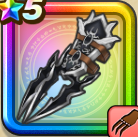

黒嵐のツメ
攻略班 7.5点 / ムーンサルトしんくうは裂鋼拳超しんくうげりテンペストブロウ※錬成で強化可能
くわしい特徴
【レベル別習得スキル】 Lv1【レンジャー】攻撃力+5 Lv1ムーンサルト（消費MP：3）飛行系に威力250%それ以外の系統には130%の体技ダメージを与える Lv10しんくうは（消費MP：9）体術で大気を切り裂き、敵全体に120%のバギ属性体技ダメージを与える Lv15裂鋼拳（消費MP：12）マシン系に威力180%、それ以外の系統には120%の斬撃攻撃を2回する Lv20超しんくうげり（消費MP：20）真空の刃と共に蹴りを放ち、敵全体に威力190%のバギ属性体技ダメージを与える Lv30テンペストブロウ（消費MP：25）両腕から嵐のやいばを放ち、敵1体に威力180％のバギ属性の体技攻撃を2回する Lv35けもの系へのダメージ+5% Lv40鳥系へのダメージ+5% Lv45攻撃時+2%の確率で幻惑を与える Lv50攻撃力+12錬成スキル改1鳥系へのダメージ+10%改2テンペストブロウ改（消費MP：33）両腕から嵐のやいばを放ち、敵1体に威力220％のバギ属性の体技攻撃を2回し、たまに攻撃力を下げる改3鳥系へのダメージ+10%改4錬成ぶき特別演出解放・メガモン討伐結果発表時に特別演出が追加・武器の見た目に特別なエフェクトが追加 【限界突破スキル】 1凸スキルの斬撃・体技ダメージ+5% 2凸スキルの斬撃・体技ダメージ+5% 3凸スキルの斬撃・体技ダメージ+5% 4凸スキルの斬撃・体技ダメージ+5%